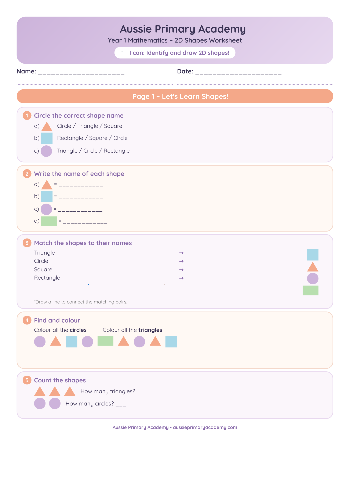

Teacher guidance
Place real shapes beside the worksheet. Ask students to name each shape and describe its sides and corners before recording an answer.
Year 1 · Maths · Geometry · Free Printable
Help Year 1 students identify, name and describe common 2D shapes found in everyday objects.
Worksheet Preview

Students will identify, name and describe common 2D shapes such as circle, square, triangle and rectangle.
AC9M1SP01
Identify and describe the features of familiar 2D shapes and sort them by attributes.
Use real classroom objects. Discuss sides and corners. Students can sort and match shapes before naming them.
Practical ways to prepare, support and extend this Year 1 learning.
Place real shapes beside the worksheet. Ask students to name each shape and describe its sides and corners before recording an answer.
Find circles, rectangles, squares and triangles in everyday objects. Ask your child what makes each object a useful example.
Use shape cards and model one description at a time. Extend by asking students to sort shapes using more than one feature.